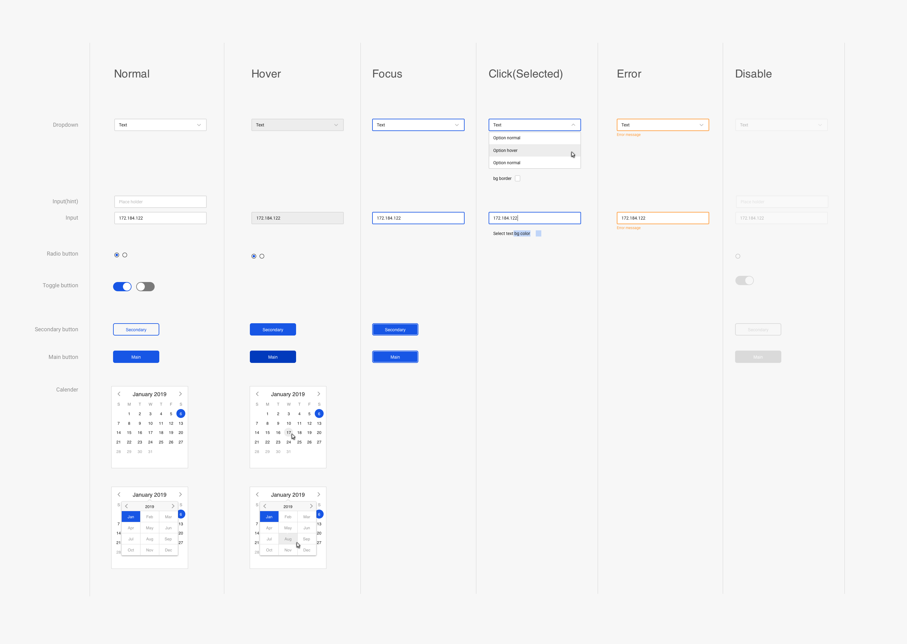
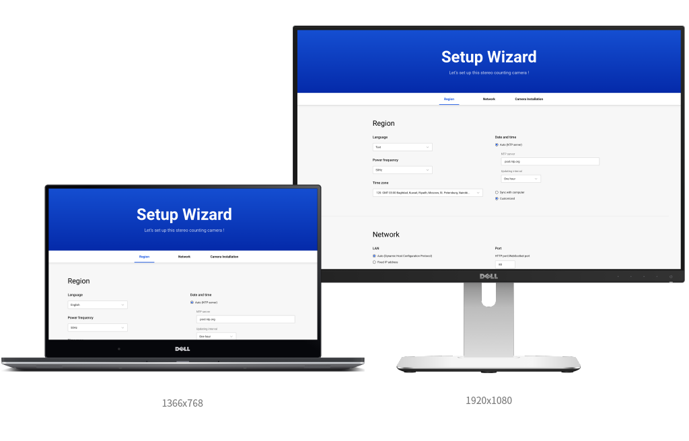
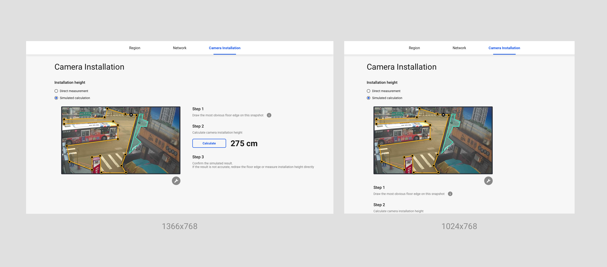
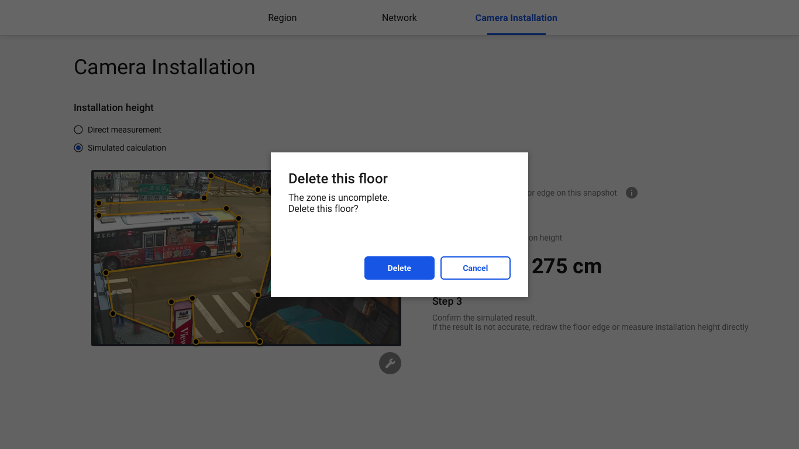

設計目標
-
簡潔明亮的設計風格
-
優雅時尚的商業配色選擇
-
以筆記型電腦解析度為主設計
視覺設計重點
-
重點色選擇鮮豔又沈穩的深藍色，使畫面有商業科技感
-
舒適對比足夠的灰階文字設計
色彩規劃
-
以文字與元件間距、位置、大小的巧妙設計將內容分群，使使用者能輕易在看到畫面當下了解各設定間的群集分層關係
視覺分層設計
主題配色
背景以舒適的灰階色為主，搭配鮮艷明亮的強調色
背景色
淺灰白，優雅調性
輔助、文字色
近黑色強調對比
主題色
科技感、可互動指引
主題輔色
互動反饋
警示色
提醒示意
正向回饋色
成功反饋
元件設計
元件各狀態的標準規劃
元件與狀態設計圖
Icon設計
規劃搭配乾淨鮮明的顏色和線型Icon設計
解析度尺寸
因使用者多為使用筆電的安裝人員，以1366x768為主要解析度，僅針對桌面及筆記型電腦解析度做設計。
簡易RWD
設計時將設定內容分為左右兩欄位，當解析度寬度低於1280px時，右側欄位會向下排列。
跳出視窗設計
簡潔直角型設計
